点击空白处或按 Esc 关闭
我们已经有四个模式了。在研究第五个之前，先弄清这一堆东西到底是什么。
为什么我们需要这么多模式？
场景在变，设备却只有一种默认状态。值得问的不是「要不要这么多」，而是「它们到底有什么共同点」—— 想清楚这一点，才知道下一个模式该怎么做。
打断一次，平均要花这么久才能重新回到刚才的状态。这期间再被打断一次，前面的恢复就白费了。
每来一个新场景就做一个新模式，设计、开发、上线都得重走一遍。场景越多，要维护的版本越多，用户还得记住每个模式藏在哪。
把入口、激活、配置拆成可组合的能力，新场景换一组配置就成立，不用重新开发，也不用等下一个版本。
不逐个看功能，看它们共同面对的那个问题。
模式类功能是系统在数字健康方向上的一次能力建设：不要求用户更自律，而是让设备在合适的场景里，主动把干扰拿掉。
这类功能都有个共同的软肋：办法给了，但用不用、怎么用，仍然取决于用户自己。两边都没完全跳出去 —— 名单得自己填、动作得自己勾，不配置就等于没开。
所以这类功能真正做到的，不是替人做决定，而是把「保持专注」的代价，从每一次的小决定，压缩成一次设置。
所以，一个模式好不好用，就看三件事有没有解决：找不找得到、该开的时候开没开、开了之后和没开有没有区别。
苹果既给了勿扰、个人、工作、睡眠、正念这些预设，也给了一套能自己长出模式的框架。
保持平衡与保持连接同样重要。专注模式减少干扰，让人专注当下。
一个模式，就是这三组设置的一次组合。每组三项，彼此独立；刚开始用，每组做一项就能跑起来。
控制中心长按，或从设置进入
选一个场景，系统先给一套默认设置
起名字、选颜色，好在控制中心一眼认出
想开就开，想关就关
按你的作息和位置自己判断
到点、到某地、或打开某个 App 时开
决定谁能把通知送进来
换一套锁屏和桌面，只留该用的 App
顺带改 App 里的内容和几种系统设置
切换要快：最好一次点按完成，不用每次都翻设置。
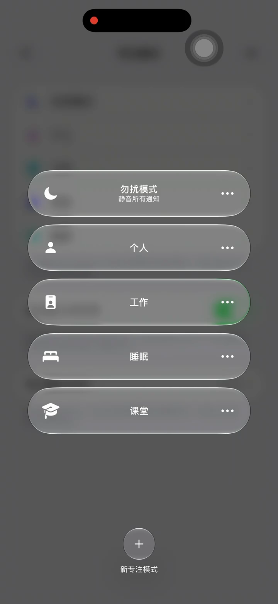
长按就展开全部模式，最底下是新建。平时切换不走设置。
会议中途静音、临时专注一小时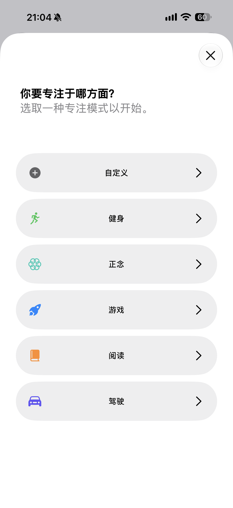
选一个场景，图标、颜色、通知规则都会先配好；不满意可以逐项改。
开会、写作、通勤这类固定场景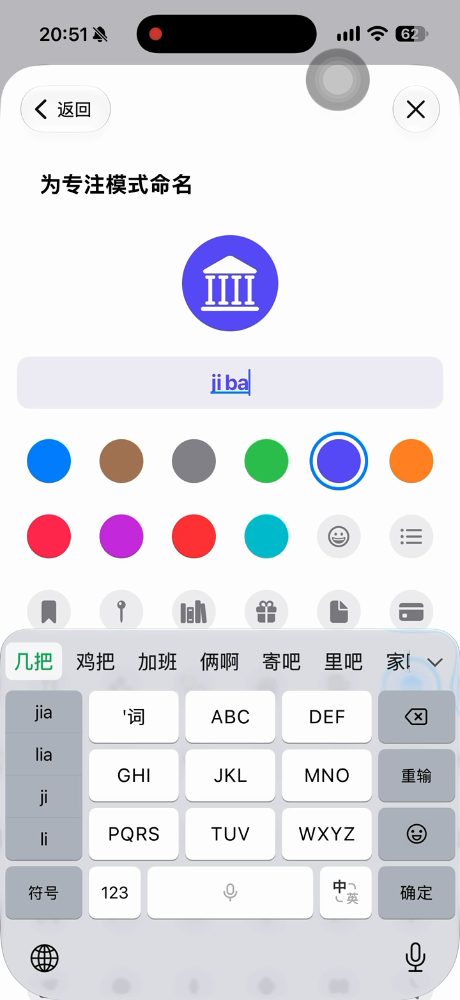
名字和颜色会出现在控制中心、锁屏和状态栏，几个模式并存时靠它区分。
同时开着工作和睡眠两个模式三种方式可以同时设，满足任意一个就打开。只有一种是手动，其余交给系统。
点一下就开，再点一下关，不看时间地点。
系统根据你的位置和使用习惯判断，不用一条条写规则。
自己定规则：到点、到某个地方、或者打开某个 App。
三件事依次收紧：谁能打扰你、屏幕上能看见什么、手机本身要不要跟着变。
只有名单里的联系人和 App 能把通知送进来，其他全部静音。名单空着，一条都进不来。
名单空着，所有通知都走下面这条静音的路
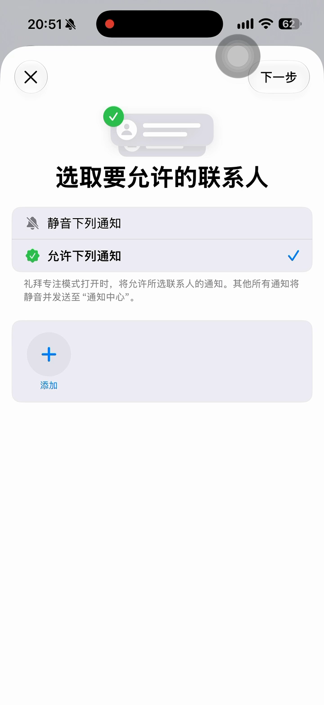
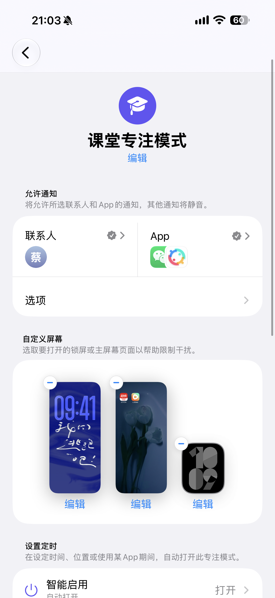
锁屏、桌面、手表各换一套页面，模式一开就切过去。管的不只是通知，还有你眼前能看到什么。
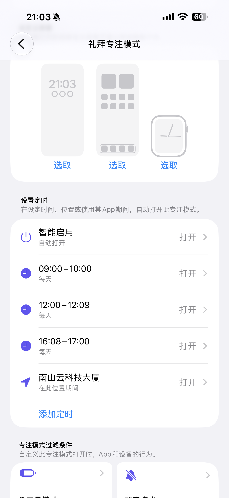
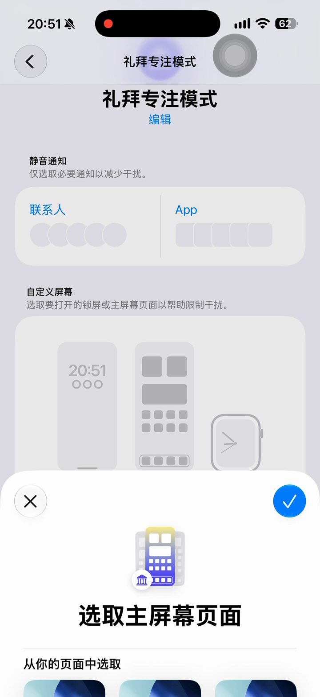
换成另一张壁纸和另一组小组件。
只留这一页 App，其他页面暂时收起来。
配对的手表也跟着换表盘。
开模式的同时，把某些 App 里的内容和几项系统设置一起改掉，省得再手动设一遍。
三星把模式做成了一个能改系统设置的自动化容器。
入口和激活的结构与 iOS 接近，差别集中在配置这一段能走多深。
控制中心磁贴长按，或设置首页
睡眠、影院、驾驶、运动、放松、工作
自定义名称图标，误删可找回
磁贴点一下，详情页也有大按钮
8 类 28 个条件，含情境与设备
手动开启可设时长，到点自己关
免打扰 + 限制应用程序两张名单
锁屏与主屏各换一套，退出还原
23 类 115 项系统设置批量调节
入口只比 iOS 多一步「详细信息」。七个预设按场景排好，点开先问用「基本」还是「自定义」。
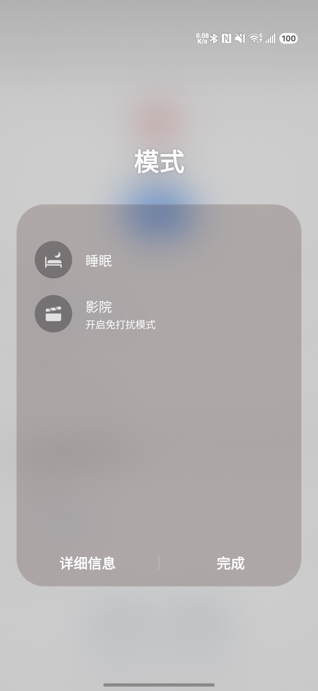
下拉控制中心长按「模式」，点左下角「详细信息」直接进设置；平时点一下就能开关，不用翻菜单。
会议中途、进影院前一步切换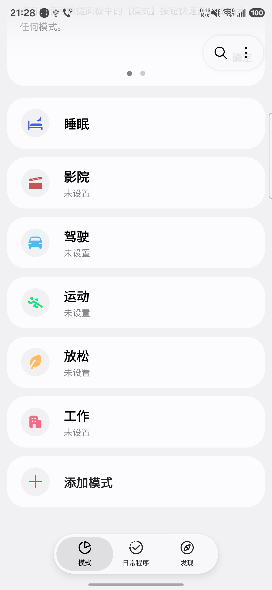
睡眠、影院、驾驶、运动、放松、工作六个预设加一个自定义，按使用场景排列，没配过的标「未设置」。
第一次用，直接挑一个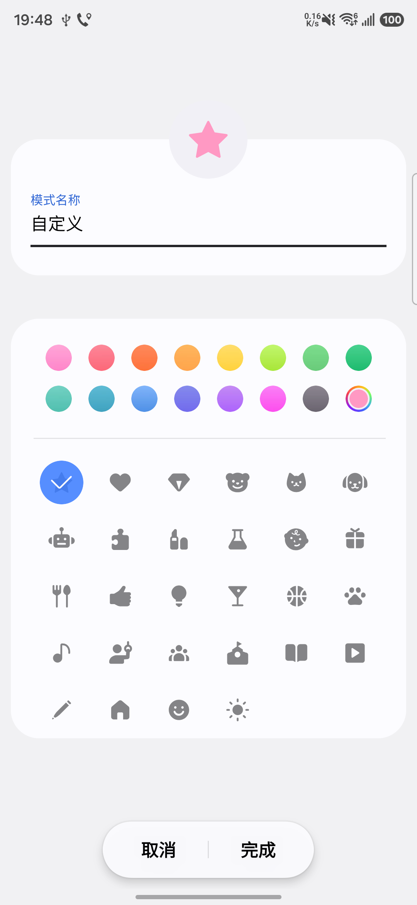
自己起名字、选颜色和图标；删掉的系统预设能在顶部恢复列表里一键找回，不必重配。
预设不合适，自己改一个每个模式的详情页顶部都有「自动开启 / 何时启动此模式」，这是条件入口。iOS 那边叫「智能启用」的那一层，三星做成了可逐条挑选的清单。
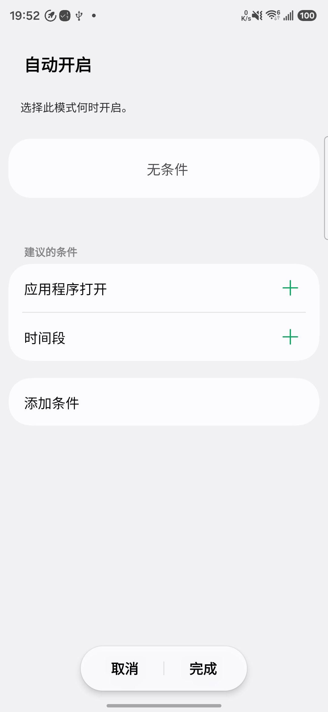
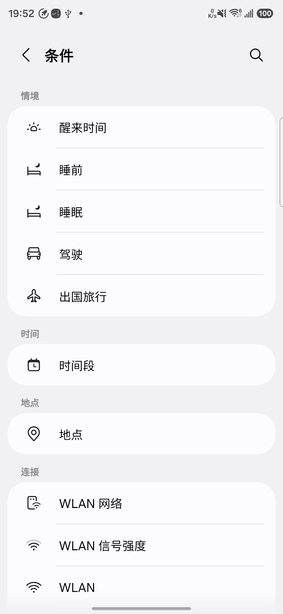
推荐条件不是全量条件的子集：睡眠模式的「睡眠时间表」、其余模式的「应用程序打开」，在 28 个条件里都找不到。系统动作也是一样 —— 建议的操作里会出现「灰阶」这类全量 115 项里没有的条目。建议列表是快捷入口，按场景挑好的组合，不按分类穷举。
iOS 把配置摊成三个页面，三星压成三张卡：先管注意力，再管氛围，最后才动系统设置。
两张口的名单：免打扰决定通知怎么拦，限制应用程序决定哪些应用能用。睡眠模式里就设成了「除了哔哩哔哩和其他 26 个」。
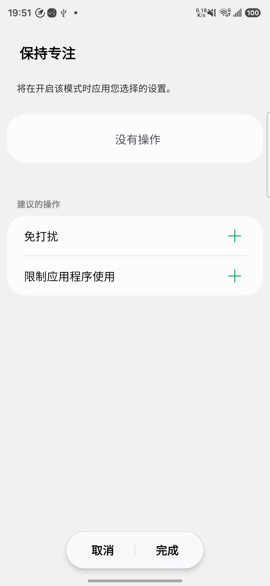
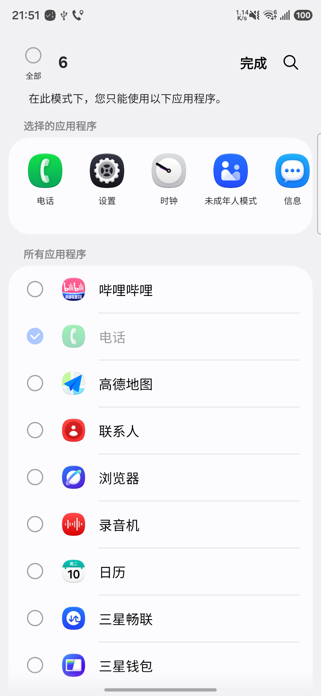
锁屏和主屏幕各换一套：壁纸、时钟排版、息屏显示。模式退出时自动换回原来的样子，不会改乱桌面。
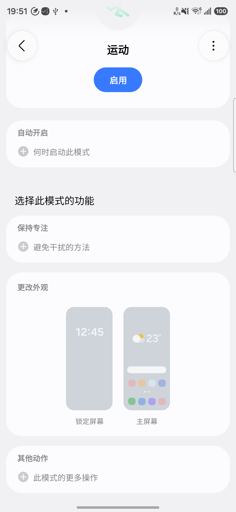
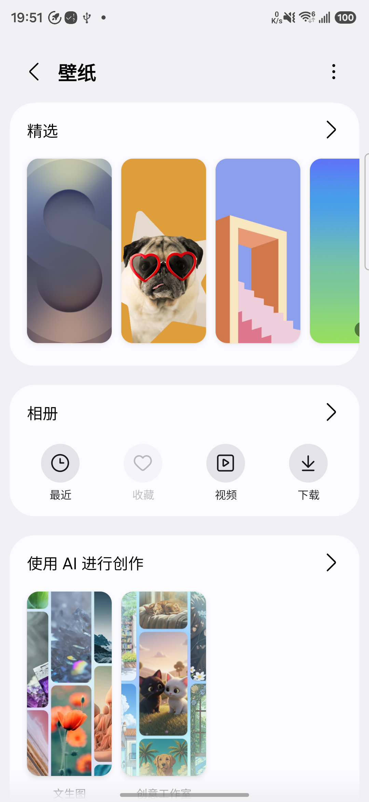
打破设置页之间的边界，把连接、声音、显示、电池、辅助功能等全部收进模式统一控制。开启时批量改，关闭时全部还原 —— 这是两家差距最实在的一段。
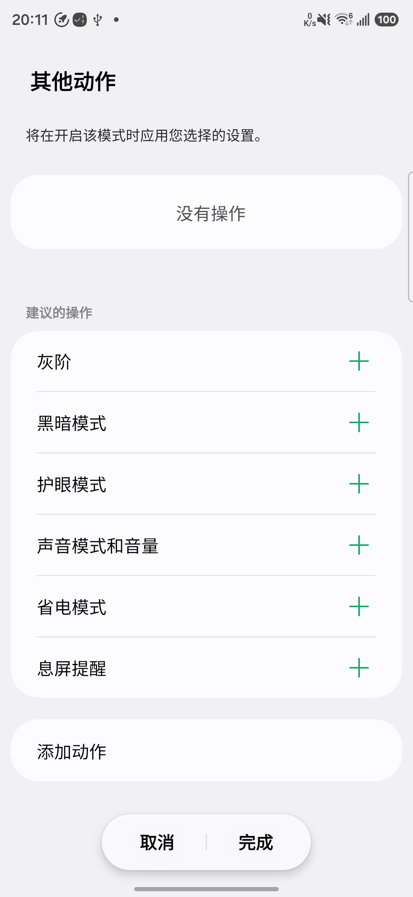
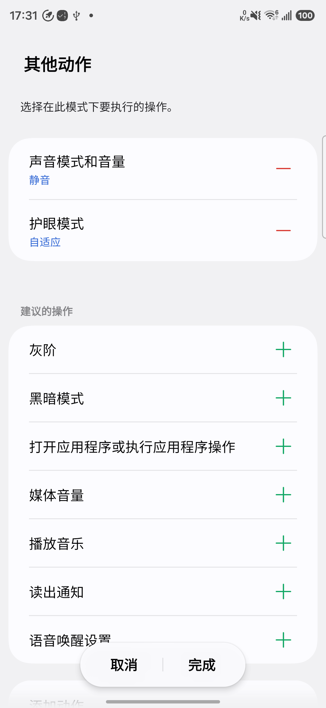
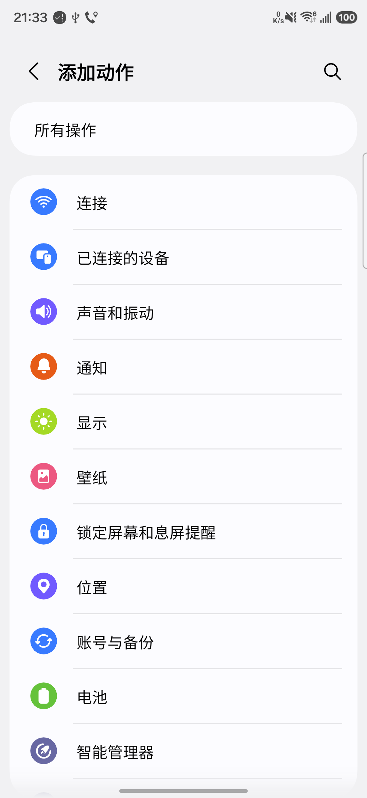
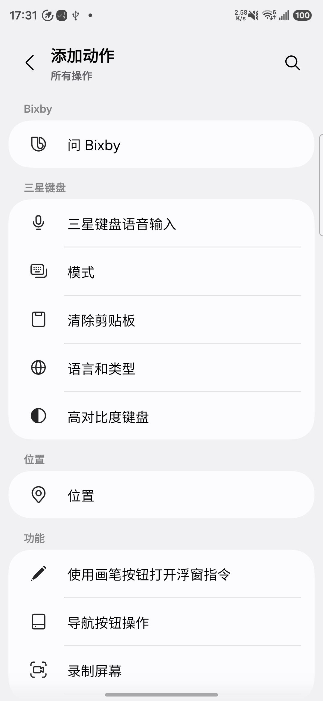
两边都能用，但替用户做的决定不一样多。
前三行是做法，后三行是代价。
| 维度 | iOS 专注模式 | One UI 模式与日常程序 |
|---|---|---|
| 核心模型 | 选一个场景，系统配好一套参数 | 定一个条件，逐项勾选要执行的动作 |
| 入口 | 控制中心长按展开全部模式，底部新建 | 控制中心磁贴长按进「详细信息」，或从设置进入 |
| 激活 | 智能启用 + 时间、位置、打开 App；手动开关 | 8 类 28 个条件（含情境、设备、事件）；支持倒计时自动退出 |
| 配置范围 | 通知名单、三个系统页面、10 项过滤条件 | 保持专注、更改外观，加 23 类 115 项其他动作 |
| 使用门槛 | 低：预设直接用，每组改一项就能跑 | 高：要会搭规则，动作得一个个选 |
| 典型失败 | 名单空着，等于全部静音 | 规则搭得太复杂，建完就忘了用 |
一个把复杂度收进系统，一个把复杂度摊给用户。
用户只需要回答「现在是什么场景」，剩下的参数由系统预置。代价是上限固定 —— 想改系统级设置，只能靠 10 项过滤条件挑几样。
用户需要回答「什么条件触发、执行哪些动作」，每一步都要自己勾。代价是门槛高 —— 不会搭的人，模式建了也不会用起来。
两个样本给了两套解法，落到我们身上，还是这三个方向。
| 方向 | 一句话判断 | 重点要做的 |
|---|---|---|
| 构建入口 | 让模式出现在手边，而不是藏在设置里 |
|
| 激活能力 | 从「记得开」变成「帮你开」 |
|
| 系统控制 | 不只是静音通知，设备行为要真的变 |
|
模式能调用的全部系统能力，115 项，按 23 类归档。这也是它与 iOS 差距最实在的一段。
按手机已安装的应用展开：打开相册、QQ 音乐、哔哩哔哩、小红书、三星钱包……每一类的二级动作也跟着应用走（比如 QQ 音乐还带「最近播放」「听歌识曲」）。数量随安装变化，不计入上面的 23 类 115 项。
点击空白处或按 Esc 关闭